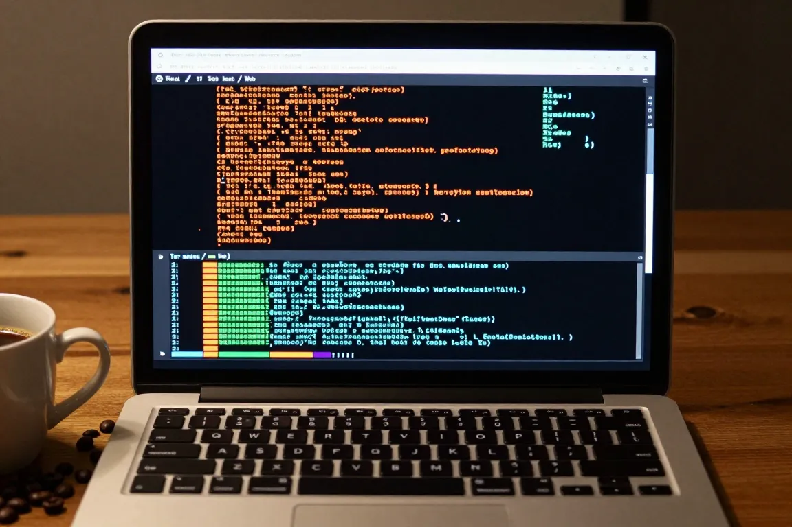

Et rutenett av tegn i fast bredde, kanter av boksetegn, en mørk eller fosforgrønn bunn og tastaturhint. Det låner fra kommandolinjeverktøy og tekstbaserte brukergrensesnitt for å lage nettsider som føles som en terminal.

Kjerneidé
Terminalen er det ærlige grensesnittet: et fast tegnrutenett, bare tekst og et tastatur gjør et verktøy raskt og pålitelig.
Designprinsipper
Sett hvert tegn på et fast rutenett: én mono på 14px til 16px, tegnbredde 8px til 10px, linjehøyde 20px til 24px.
Juster alle blokker til hele tegn og hele linjer; bredder er multipler av 1 ch og høyder multipler av 1 linje.
Tegn kanter med boksetegn (┌ ─ ┐ │ └ ┘) eller en linje på 1px festet til rutenettet; hjørneradius er 0px.
Bruk 2 til 4 farger: en mørk bunn (#0C0C0C), én tekstfarge, ett aksent og en varselfarge; grønt eller ravgult på svart gir fosforpreg.
Vis en ledetekst (>, $ eller ▌) og en blinkende blokkmarkør med 1s intervall (500ms på, 500ms av).
Vis tastatursnarveier i klammer, for eksempel [q] avslutt, [/] søk, på 12px til 14px ved siden av hver handling.
Bruk ASCII-kunst, søyler (▁▂▃▅▇) og tekstspinnere (⠋⠙⠹) i stedet for bilder og ikon.